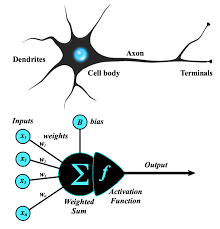
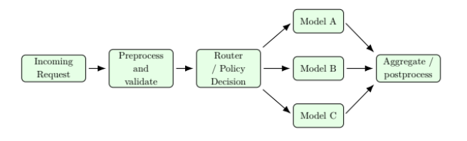
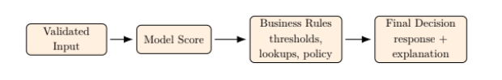
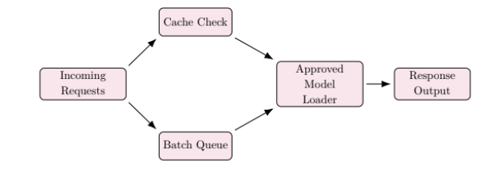
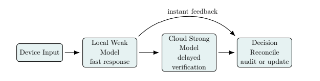
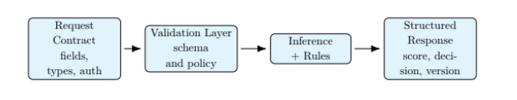

Unit Introduction
One of the important children’s rights that we will often deal with in our work, is the child’s right to safety. So let us look at child and youth protection and important areas that all development facilitators should know about. We will start with an understanding of what we mean by child protection. We look at how children’s rights to safety can be violated. We will focus specifically on how children with disabilities are vulnerable to rights violations.
What Do We Mean by Child Protection?
Case Study: Parents of Child Who Drowned in a Pit Toilet Seek Justice
2017-11-13 07:43
Polokwane - Michael Komape was five years old when he drowned in a pit toilet at Mahlodumela Primary School in Chebeng Village, outside Polokwane, on January 20, 2014.
The shocking story made news across the world, and raised questions about his right to protection, neglect and the governance of Limpopo Province’s education department.
GroundUp reports that on Monday the Limpopo High Court in Polokwane will begin hearing a claim for damages by Michael’s family against the National Department of Basic Education and the Limpopo Department of Education.
A Tragic Loss
The undisputed facts are this:
-
On January 20, 2014 Michael fell into a pit toilet at Mahlodumela School and drowned in a sea of human faeces.
-
Some hours later his body was retrieved by the fire department.
-
The toilets were demolished that same day and within weeks new toilets were erected in their place.
-
The evidence of the dilapidation which claimed Michael’s life now lies buried underground at Mahlodumela School. Though some photographs of the deadly toilets were captured on a smartphone and will be presented to the court this week.
The family remains aggrieved that no-one from the provincial education department attended the funeral. Virtually the entire Chebeng Village was there, but no-one from government.
Seeking a Simple Apology
There was no offer to assist with funeral costs, nor was there any apparent concern for the plight of the family. Not even an apology. Which is one of the remedies being sought in the Polokwane High Court by the Komape family: A simple apology.
Apart from this, the family is seeking R900,000 in civil damages for shock and trauma plus another roughly R2m in constitutional damages.
The family is also asking for a declaratory order to force the authorities to attend to the abysmal state of safety and hygiene in Limpopo schools on the grounds that this is a violation of rights to dignity, safety and security, child rights and basic education.
“The reason I decided to pursue this case was to prevent this happening to other children,” says James.
A Case to Answer
As SECTION27 investigated the circumstances surrounding Michael’s death, it became clear the government had a case to answer.
“Since 2012, SECTION27 and community organisation (Befa) have been engaging the national and provincial education departments to draw attention to the unsafe, unhygienic and undignified state of school sanitation in Limpopo.”
The Rights to Dignity, Life and Safety
“Michael’s death was caused by a continued disregard for his safety. The state, from senior people such as the Minister of Basic Education and the MEC for Education in Limpopo, all the way through to the principal and teachers at Mahlodumela, violated Michael’s rights to dignity, life and safety.”
They also breached their duties owed to parents to protect their children. When parents send their children to school every day they hand over their trust to ensure that their children will be safe and their needs met.
This case study is a good example of how a community, a family and an NGO argued for improved rights for all children on the basis of a case of human rights neglect. It is an example of how neglecting a child right can lead to serious harm and abuse.
In Module 1 we emphasised that children’s safety is a key aspect of psychosocial wellbeing. Any neglect or abuse of children negatively affects their development.

Child abuse robs children of education, health, and opportunities to become their best. All children have a right to grow up in a safe environment. Good child protection measures would create a world where:
-
beliefs and discrimination that lead to abuse are changed
-
everyone accepts their duty to make sure that children are protected
-
the government commits to child protection and provides resources to support child protection
-
the media and people talk openly about exploitation, abuse and violence
-
laws are in place and are always enforced
-
children are given the information they need to protect themselves
-
children and youth are supported to participate actively in making their communities safer for all children.
Child protection includes the laws, systems (sectors or offices) and services needed to:
-
Prevent harm.
-
Respond when abuses happen.
-
Make sure that those who harm children are punished.
UNICEF (2015) recommends assessing our communities for children who:
-
Experience physical or sexual violence.
-
Are trafficked or married before their 18th birthday.
-
Undergo female genital mutilation/cutting (FGM/C).
-
Are engaged in child labour or are not registered at birth.
-
Are without family care or affected by migration.
-
Are recruited by armed groups or are in conflict with the justice system.

Child Protection for Children with Special Needs
When discussing child protection we need to consider children who have special needs or more challenges and difficulties. These challenges can make them more vulnerable to violence, neglect, poverty, HIV and AIDS, and displacement.
According to UNICEF (2009), some children who are more vulnerable to violence and abuse are:
-
Children with disabilities.
-
Children belonging to minority groups.
-
Children living on the streets.
-
Children who are orphaned or have lost parental care.
-
Refugee and displaced children.
Violation of Children’s Rights to Safety
Even though children have the right to protection, they are often exploited, abused, or neglected because the government, families and others do not do enough to protect them.
Exploitation
Exploitation is when children are taken advantage of. It may take the form of forced or harmful labour, prostitution, soldiering, trafficking, or marriage.

Violence and Abuse
Violence and abuse may be sexual, physical, emotional or psychological. Most violence against children is carried out by people that children know and adults that they trust.
Abuse, Abandonment and Neglect
When a child is abandoned, a person leaves a child without care with no plan to return. Neglect can be physical, educational, or emotional.
Factors Linked with Child Neglect (or Abuse)
-
Parents’ or Caregivers’ History: Low self-esteem, illness, depression, poor coping skills, substance abuse.
-
Family and Child Factors: Marital status, age of caregiver, domestic violence, poverty, unemployment.
-
Outside Sources: Emergencies (war, conflict, drought), and diseases such as HIV and AIDS.
Signs of Abuse and Neglect
-
Possible Signs of Neglect: Frequent hunger, poor hygiene, untreated medical problems, frequent school absence.
-
Possible Signs of Emotional Abuse: Delayed growth, anxiety, sudden speech problems, being very passive or aggressive.
-
Possible Signs of Physical Abuse: Bruises, burns, strange excuses for injuries, fear of returning home.
-
Possible Signs of Sexual Abuse: Age-inappropriate sexualized behavior, difficulty walking or sitting, torn or bloody underclothing.
Upholding Children’s Right to Safety
Most countries have Children’s Acts that provide specific protection for children who have been abused.

Steps to Take When You Suspect Abuse
-
Stay calm and provide a comfortable environment.
-
Listen carefully and tell the child it is not their fault.
-
Document the exact words of the child’s story.
-
Contact the authorities (child protection unit, police, social worker).

Removing Children from Situations of Abuse or Neglect
The police or a social worker can take abused or neglected children to a ‘place of safety’ without a court order in certain circumstances.
Sexual Offences
Important kinds of sexual offences include consensual sex with a minor, sexual assault, sexual exploitation, and child pornography.

Children’s Rights to Care
Children who have been abused, neglected or harmed in any way have the right to physical, psychological and social care. They should be helped to return to their family and community in a way that increases the health, self-respect and dignity of the child.
For example:
-
Children who have been sexually abused may need psychosocial services to help them regain their confidence and trust in others.
-
Children who have lost their parents may need psychosocial services to deal with grief, fear and death, and to gain coping and life skills.
-
Children who have been affected by stigma and discrimination need psychosocial support to regain their self-confidence.
Unit Summary
In this unit, we learnt that child protection involves laws, systems, and services needed to prevent harm, respond to abuses, and ensure punishment for perpetrators. We covered various forms of violation, signs of abuse, and legal duties to report such cases to uphold children’s rights to safety and protection.